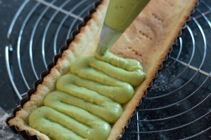
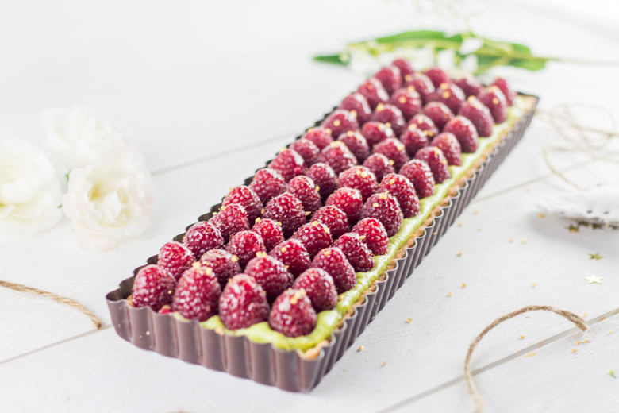
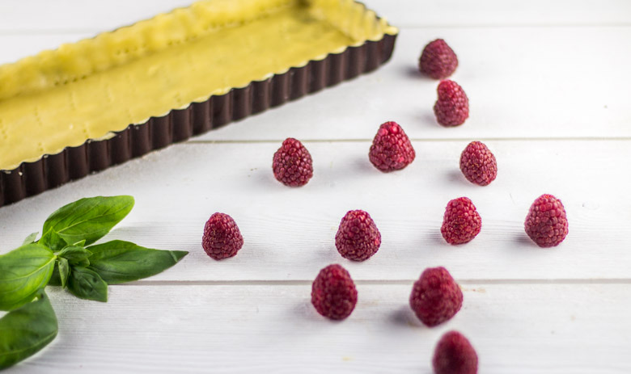

Tarte framboise pistache pour un dessert gourmand et léger

Voici ma recette de la tarte framboise et sa crème pâtissière à la pistache pour un dessert plein de douceur.
Ici je vais vous parler de gâteau d’anniversaire tout simplement parce qu’il y a quelques temps de ça c’était l’anniversaire de mon chéri et qui dit anniversaire dit « gâteau ». Au départ j’étais partie sur une idée de « fantastik », célèbre gâteau de Michalak (surtout avec les fraises qui commencent à arriver) puis finalement il a insisté pour avoir une tarte rectangulaire (car lui aussi est ultra fan de mon nouveau au moule !!!) avec de la framboise !
Je ne regrette absolument pas de l’avoir écouté car très sincèrement nous nous sommes régalés. Cette tarte framboise pistache est idéale après un repas bien copieux plutôt qu’un gros gâteau qui restera finalement au frigo pour les jours suivants… J’ai accompagné cette tarte à la framboise d’une crème pâtissière à la pistache et j’ai recouvert les framboises d’un glaçage miroir pour donner un aspect brillant aux framboises et s’il m’était resté sur les bras quelques pistaches je pense que j’en aurais rajouté un peu sur le dessus en élément de déco mais je n’en avais plus^^. Également, j’ai réalisé moi-même la pâte mais si vous ne vous sentez pas le courage de la faire vous-même vous pouvez tout à fait la remplacer par une pâte sablée achetée directement dans votre commerce préféré !
Nous étions six ce soir-là et il n’en restait plus une part (vous comprendrez à la vue du repas que je publierai prochainement, pourquoi j’avais peur qu’il me reste du gâteau sur les bras^^) alors ce fut pour moi une mission réussie et mon chéri était le plus heureux et ça, ça n’a pas de prix.
Pour un dessert « rapide » et léger je vous conseille de tester cette petite douceur vous ne serez pas déçu (parole de mouton^^)
Je vous laisse avec la recette et j’espère qu’à vous aussi elle vous plaira !
Ingrédients
- Farine - 250g
- Oeufs - 1
- Sucre - 100g
- Sel - 1 pincée
- Beurre à temp ambiante - 125g
- Eau - 1 càs
- Extrait de vanille - 1 càc
- Oeufs - 4 jaunes
- Lait - 500ml
- Sucre - 70g
- Maizena - 40g
- Farine - 20g
- Beurre - 25g
- Pâte de pistache - 100g
- Gousse de vanille - 1/2
- Framboises - 200g
- Paillettes alimentaires dorées
- Sucre - 100g
- Eau - 50ml
- Gélatine - 2 feuilles de 2g de gélatine
Instructions
- Dans un grand bol, verser la farine, le sel et le sucre
- Mélanger
- Ajouter le beurre coupé en morceaux et l'extrait de vanille et mélanger à nouveau
- Émietter la pâte jusqu'à ce qu'elle devienne sableuse
- Casser l’œuf et l'eau et mélanger
- Fraiser* la pâte (*écraser la pâte avec la paume de la main afin d’amalgamer les différents éléments entre eux)
- Former une boule et envelopper la de film alimentaire
- Laisser reposer minimum 1h au frais
- A la sortie du frigo, étaler la pâte au rouleau
- Préchauffer le four à 180°.
- Étaler la pâte en la soulevant régulièrement pour éviter qu'elle n'accroche au plan de travail
- Prévoir d'étaler la pâte d'une taille plus grande que la taille du moule pour qu'il y en ait bien partout sur tous les bords
- Beurrer votre moule pour y faire adhérer votre pâte plus facilement
- Placer la pâte dans votre plat à tarte et positionnez la correctement en vous aidant de vos doigts
- Piquez la avec une fourchette
- Enfourner pour 15/20 minutes de cuisson, tout en surveillant la coloration Astuce : déposer des billes de cuissons (ou haricot, pois chiche etc..) pendant la cuisson pour éviter qu'elle ne gonfle de trop.
- A la sortie du four, enlever les billes de cuisson
- Laisser refroidir entièrement
- Dans une casserole, faire chauffer le lait avec la gousse de vanille
- Porter à ébullition
- Pendant ce temps, dans un bol mélanger énergiquement les jaunes d'œufs et le sucre pour blanchir le mélange
- Incorporer la farine ainsi que la maïzena et bien mélanger pour obtenir un mélange bien homogène
- Une fois le lait à ébullition, sortez le du feu
- Verser la moitié du lait dans le bol contenant les œufs, le sucre, la farine et la maïzena. Mélanger
- Reverser ce mélange dans le lait restant
- Remettre sur le feu, à feu doux et remuer jusqu’à obtenir une crème épaisse et onctueuse. Attention, il ne faut pas cesser de remuer jusqu'à la fin de la cuisson et il faut aussi faire attention à ce que la crème n'accroche pas la casserole. Astuce : lorsque la crème commence à frémir légèrement en surface, battre encore 30 petites secondes et retirer du feu.
- Ajouter le beurre en petits morceaux, puis la pâte de pistache et fouetter à nouveau pour l’incorporer. Dans cette recette j'ai utilisé de la pâte à pistache industriel et il m'a fallut 100g de cette pâte pour obtenir le résultat que je voulais mais allez y à tâtons et goûtez au fur et mesure pour obtenir la dose souhaitée
- Verser la crème pâtissière dans une jatte
- Filmer avec du cellophane et avec une fourchettes faites quelques petites entailles pour laisser la buée s'échapper
- Placer au frais pendant 2 bonnes heures
- Verser la crème pâtissière dans une poche munie à douille munie d'une douille
- Garnir le fond de la tarte de crème pâtissière
- Disposer les framboises sur le dessus de manière régulière
- Faire tremper vos feuilles de gélatine dans de l'eau froide (suivez les instructions du paquet)
- A feu très doux, faire revenir l'eau et le sucre en remuant constamment (attention ça ne doit pas caraméliser, ni bouillir)
- Une fois le sucre dissous, hors du feu, ajouter les feuilles de gélatine ramollies au mélange
- Remuer jusqu'à totale dissolution de la gélatine
- Appliquer délicatement sur les framboises à l'aide d'un pinceau
- Placer la tarte au frais jusqu'au moment de la dégustation



Les tips de la communauté
Tarte très appréciée pour son association réussie framboise-pistache et sa présentation élégante. Le moule rectangulaire particulier reçoit beaucoup d'éloges pour l'originalité qu'il apporte à la présentation. Plusieurs lecteurs testent la recette avec succès et l'approuvent comme délicieuse. Une question sur l'utilisation de lait de soja est résolue positivement par l'auteure.
Astuces
- Le moule rectangulaire donne une originalité immédiate à la tarte
- La pâte à pistache se trouve facilement au rayon pâtisserie de l'hypermarché
- La crème pâtissière peut se faire avec du lait de soja (moins gras mais réalisable)
Variantes suggérées
- Utiliser du lait de soja ou autres laits végétaux pour la crème pâtissière